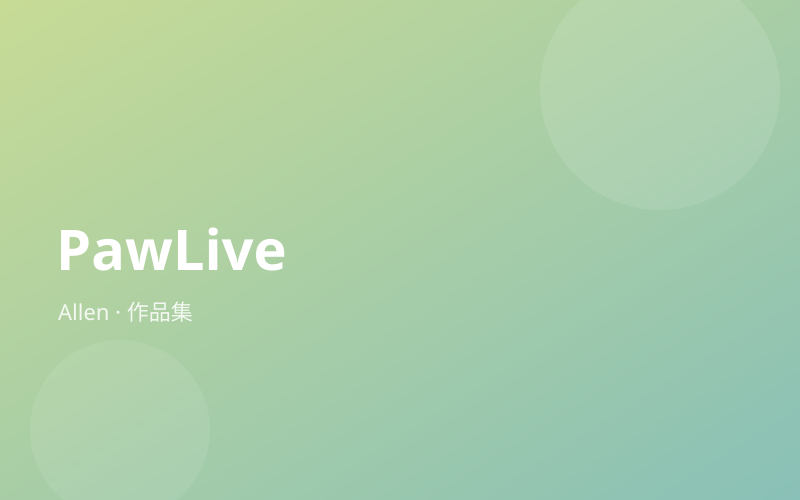

PawLive

關於這個作品
PawLive 是一個針對實體課堂設計的即時互動平台。教師可建立課程、開教室、發起投票，學生用手機掃 QR code 加入後，便能即時投票、聊天、獲得課堂加分。
後端全由 Firebase Firestore 驅動，所有狀態透過 `onSnapshot` 即時同步，不需刷頁面。教師儀表板有能量地圖（泡泡圖）可一眼看出哪些學生最活躍；投票、訊息、被 spotlight 的次數會合算成 100 分的量化成績並支援 CSV 匯出。
另有遊戲化系統：課堂冒險進度條、吉祥物、答對撒彩帶，讓上課變得更有參與感。v3.1 版本支援簡報模式（SlideShow）與教師備課筆記（TeacherNotes）雙視窗同步。
作品亮點
- Firebase 即時同步，學生掃 QR code 秒進課堂
- 泡泡圖能量地圖，一眼掌握全班參與度
- 投票 + 訊息 + Spotlight 自動換算成量化成績並匯出 CSV
- 遊戲化冒險系統，答對撒彩帶提升課堂氛圍
- 簡報模式 + 教師備課筆記雙視窗同步
使用工具
ReactTypeScriptFirebaseTailwind CSSD3ViteDocker